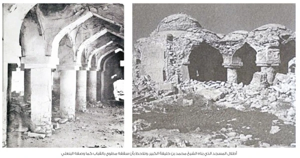
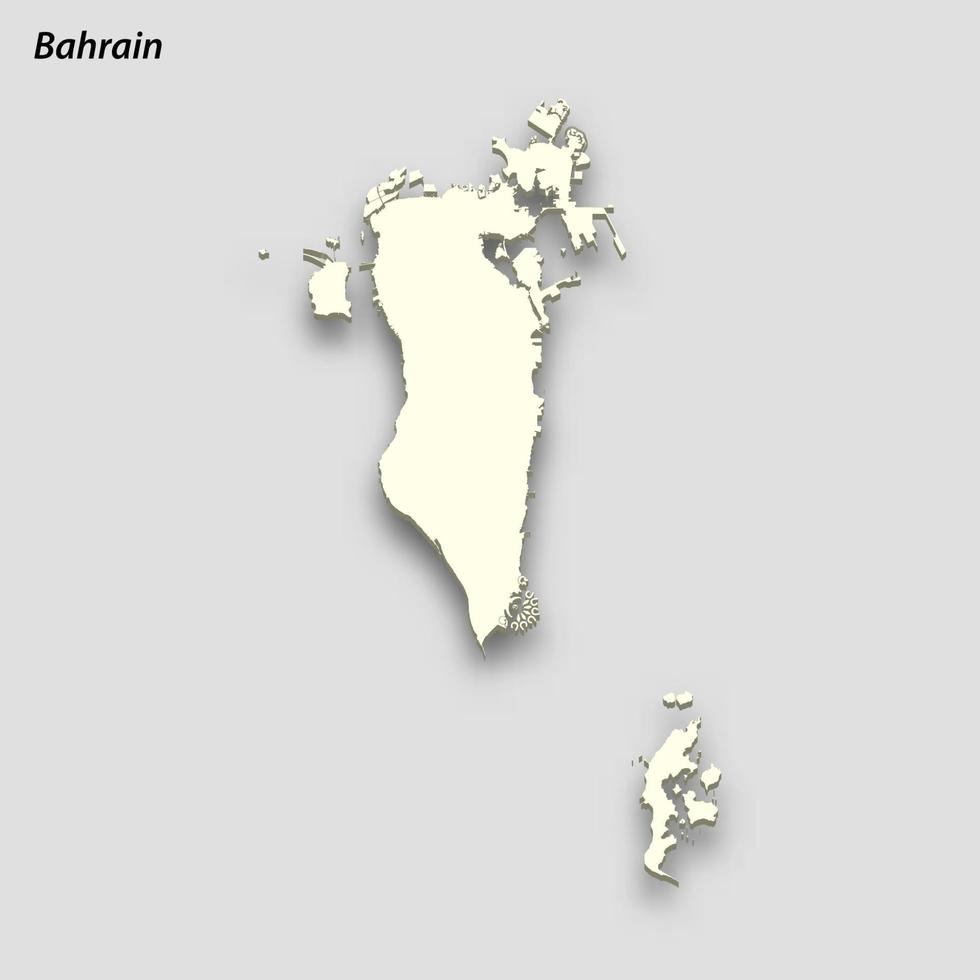
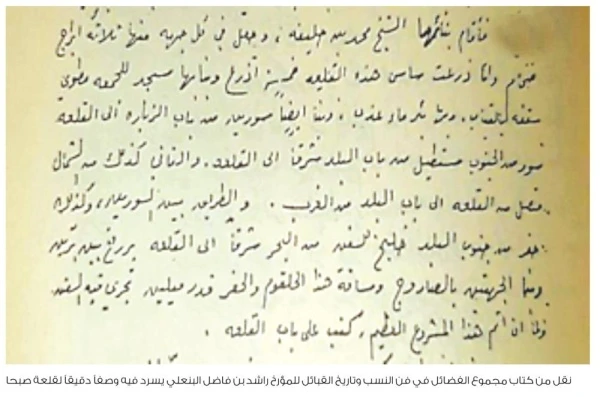

النموذج الأنطولوجي
طبقة تصنيف تحدّد الكيانات وخصائصها وعلاقاتها بصيغة قابلة للاستعلام.
من أوال القديمة إلى البحرين الحديثة
المنصة التراثية الرقمية الشاملة لتوثيق حضارة إقليم البحرين وجزيرة أوال؛ تجمع الوثيقة والمكان والسيرة والنسب في سياق بحثي واضح ومتاح.

مشروع التوثيق
الرقمي للتراث.
بوابات المعرفة
تجارب مترابطة تنقل محتوى المنصة السابقة كاملًا إلى واجهة رسمية موحّدة.

جغرافيا الذاكرة
ستة معالم جغرافية موثّقة تربط الموقع بحكايته ومصادره التاريخية.
ذاكرة العائلة
استكشف الأنساب الموثّقة وصمّم مشجّرات تجمع الدقة البحثية بجمال العرض.
معرفة قابلة للاستخدام
قاعدة البيانات الأنطولوجية وملفات API وReact والعمل دون اتصال في حزمة موحّدة.
طبقة تصنيف تحدّد الكيانات وخصائصها وعلاقاتها بصيغة قابلة للاستعلام.
Knowledge Graph ببنية RDF توضّح العلاقات بين الكيانات والمصادر.
تجربة PWA Offline-First تتيح مواصلة التصفح عند انقطاع الشبكة.
ثلاث درجات للتحقق تبيّن قوة كل معلومة ومسار الاستناد إليها.
خرائط وخطوط زمنية وأشجار نسب تفاعلية تربط الشاهد بسياقه.
أصوات تحفظ الذاكرة
أربع مواد مختارة تجمع الرواية الرسمية وشهادات الأحياء والدراسات المتخصصة في التراث الشعبي البحريني.

من الأرشيفملف مختار
تتبع مواد قلعة صبحا وما حولها عبر روايات تاريخية وصور للموقع وإشارات من المخطوطات. يقدّم الملف نموذجًا لطريقة المنصة في وصل الشاهد المكتوب بالمشهد الباقي.
المكتبة الأكاديمية
نُقلت المواد المتاحة إلى مسارات ثابتة للقراءة والتنزيل والاستشهاد الأكاديمي.
قراءة نقدية في الوثائق والنصوص الوسيطة المتصلة بإقليم البحرين التاريخي وجزيرة أوال.
↙ خلاصة تركيبية · ملف بحثيدراسة لتاريخ الخليج العربي في مرحلة ما بعد القرامطة ٤٤٠–٨٠٠هـ / ١٠٥٠–١٤٠٠م، للدكتور فيصل عادل الوزان.
↙ سجل توثيقي · معاينة وتحميلسجل توثيقي متعدد الأبعاد لأعلام عبد القيس في النسب والرواية والفقه والقضاء والتاريخ.
↙ ملف تاريخي موثّققراءة موثّقة في جذور عبد القيس وصلتها بقيام الدولة العيونية.
↙ بحث محكّم · تلخيص إبداعيتلخيص إبداعي في ٢٥٠ نقطة لبحثٍ محكّم يجمع طرق حديث ابن عباس رضي الله عنهما، ويحلّل ألفاظه، ويستخرج فوائده — وصلته بتاريخ إسلام أهل جزيرة أوال.
↙ تراجم وسِيَر · ملف بحثيتراجم الصحابة الكرام الذين نزلوا أرض البحرين
↙ دراسة مصوّرةخلاصة بحثية موثّقة ومدعّمة بالصور.
↙ ملف ثنائي اللغةخلاصة مصوّرة حول المشهد الأثري للمدافن.
↙ منهج بحثيمدخل مفهومي ومعياري إلى بناء المحتوى.
↙ PDFالنسخة البحثية المرافقة للمنصة.
↓ دليل استخدامشرح وظائف النظام ومسارات التصفح.
↓ بيانات مفتوحةمجموعة بيانات مجهّلة بصيغة CSV.
↓ تقرير تقنينتائج فحص الأداء والإتاحة والممارسات التقنية.
↓مركز موحّد داخل النظام الأنطولوجي
جُمعت قاعدة البيانات الأنطولوجية وخادم API ومكوّن React وملفات العمل دون اتصال ودليل الحزمة في واجهة واحدة، مع معاينة وبصمة رقمية وخيارات تنزيل متعددة.
لأغراض البحث والاستشهاد
إعداد: الدكتور أحمد بن عبدالرحمن العسيري، الأستاذ المشارك، كلية محمد بن جابر الأنصاري، جامعة البحرين. النسخة 2.0.0، آخر تحديث يوليو 2026.
العسيري، أحمد بن عبدالرحمن. (2026). سُطور من أوال 2.0: منصة بحثية حيّة للتراث البحريني. جامعة البحرين. تاريخ الاسترجاع 6 أغسطس 2026.
العسيري، أحمد بن عبدالرحمن. «سُطور من أوال 2.0: منصة بحثية حيّة للتراث البحريني». جامعة البحرين، 2026. تاريخ الوصول 6 أغسطس 2026.
العسيري، أحمد بن عبدالرحمن. «سُطور من أوال 2.0: منصة بحثية حيّة للتراث البحريني». جامعة البحرين، 2026. تم الوصول في 6 أغسطس 2026.
Alasiri, A. bin A. (2026) Sutoor Min Awal 2.0: A Living Research Platform for Bahraini Heritage. University of Bahrain. Accessed 6 August 2026.
A. bin A. Alasiri, “Sutoor Min Awal 2.0: A Living Research Platform for Bahraini Heritage,” University of Bahrain, 2026. Accessed: Aug. 6, 2026.
@misc{alasiri_sutoor_2026,
author = {Ahmed bin Abdulrahman Alasiri},
title = {Sutoor Min Awal 2.0},
year = {2026},
publisher = {University of Bahrain},
note = {Accessed 6 August 2026}
}